GoldMine是让您购物更省心、省力，并额外省钱的超级网上购物助手！
GoldMine提供多项对购物特别有用的功能，其中包括三大主要功能：
1. 通过程序可以方便进入当前主流购物平台，可以将各个流行电子商务平台的商品收藏到本地计算机，用户不必为了查看收藏商品而分别打开和登陆各个各家网站。
2. 对当前最主流的淘宝店铺和天猫商城的商品提供自动返利功能，注册用户将自己的阿里妈妈账号等信息设置好，在购物时，程序会自动帮用户打开返利链接，而且返利会从阿里妈妈广告平台直接返到用户自己的账号，公正透明，不存在第三方纠纷。
3. 对任意指定商品一键获取自己的阿里妈妈推广链接，然后根据需要进行部署，或直接推荐给他人，然后可从别人的购买中获取收益。
本软件是以插件的形式运行在chrome等浏览器中，他的运行依赖于谷歌（google）的chrome浏览器，或者内置chrome浏览器内核的其他浏览器，比较有名的如opera浏览器，另外国内出品的几个常见浏览器也都是支持该软件的安装使用，在下面会逐个加一说明。以下是本程序支持的一些常见浏览器：
由于谷歌作为当前全世界最具实力的互联网高科技企业，并且在浏览器使用方面，chrome在当下拥有全球最高的使用率，在此推荐所有人选择使用chrome浏览器，以下先以chrome浏览器为例进行说明。因此，首先请用户安装chrome浏览器。
最简单的方法是登陆官方主页：
http://www.google.com/intl/zh-CN/chrome/单击下载chrome，然后按照提示一步一步，就能顺利安装
最简单的办法就是在谷歌浏览器地址栏（多功能框）中输入以下地址：
https://chrome.google.com/webstore/detail/ggmgkbikjfkkpjbaogmjmdcgimjkgaja进入如下页面：
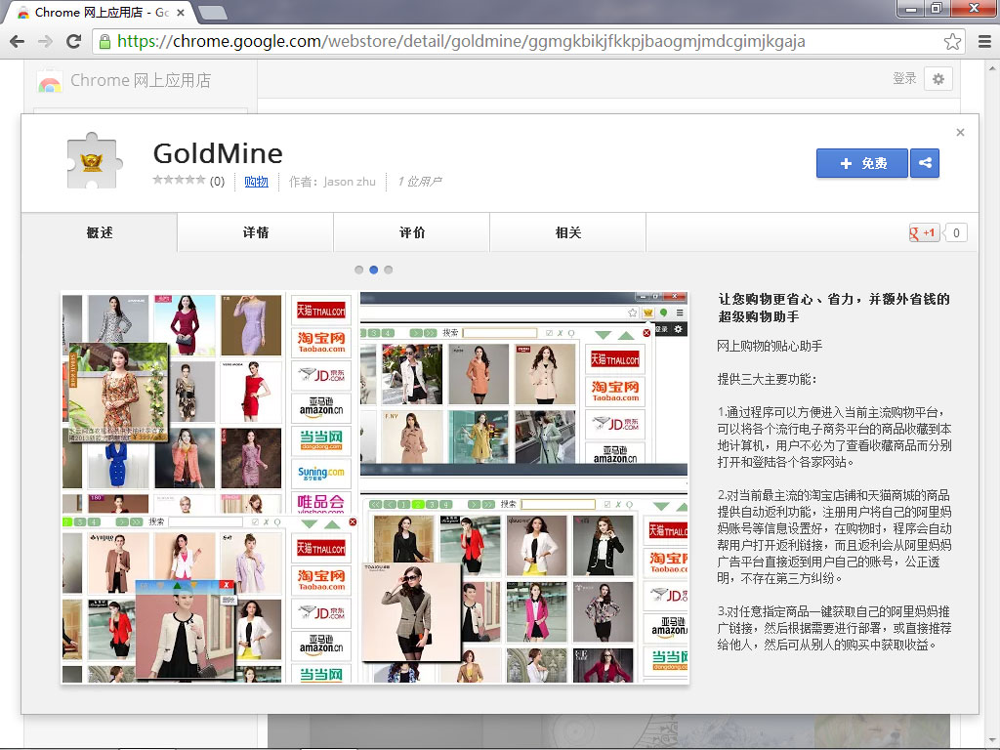图1 GoldMine在谷歌网上应用店中
如果不知道软件地址，可以先登录Chrome网上应用店（通过搜索引擎，或直接单击如下链接可进入）如图2：
https://chrome.google.com/webstore
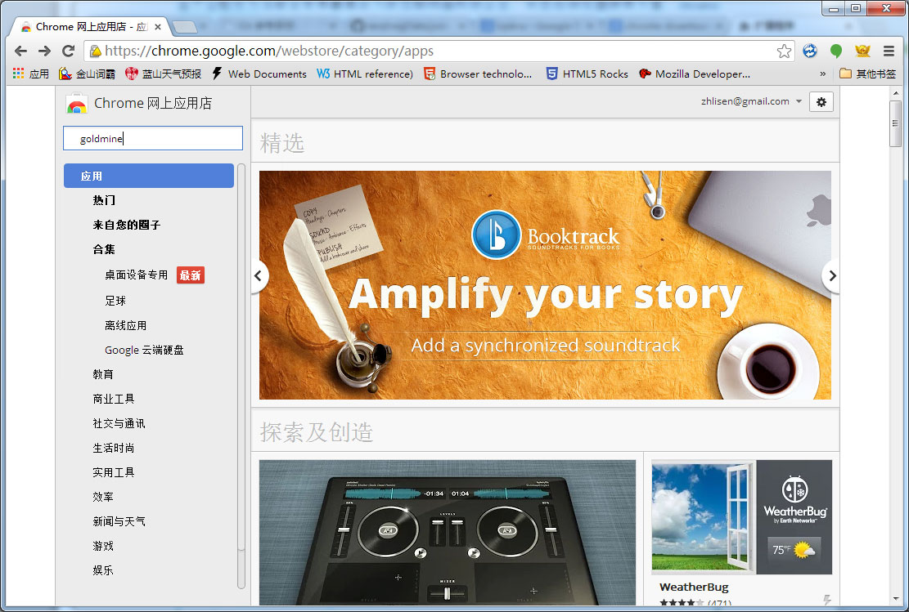图2 谷歌网上应用店
然后在左上角输入goldmine字样，回车即可找到相应链接。找到GoldMine。
进入GoldMine安装页面后，单击下图右上角标注的（+ 免费）按钮进行安装
图3 软件安装按钮
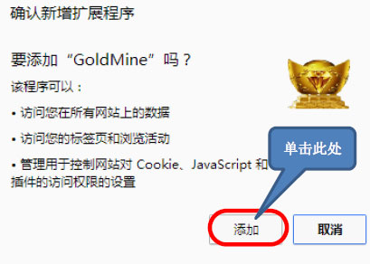图4 确认安装提示
当浏览器弹出如图4所示，提示您要安装相关扩展程序，单击添加，即可完成安装。
安装完毕后，会在浏览器工具栏中出现一个新图标，如下图所示：
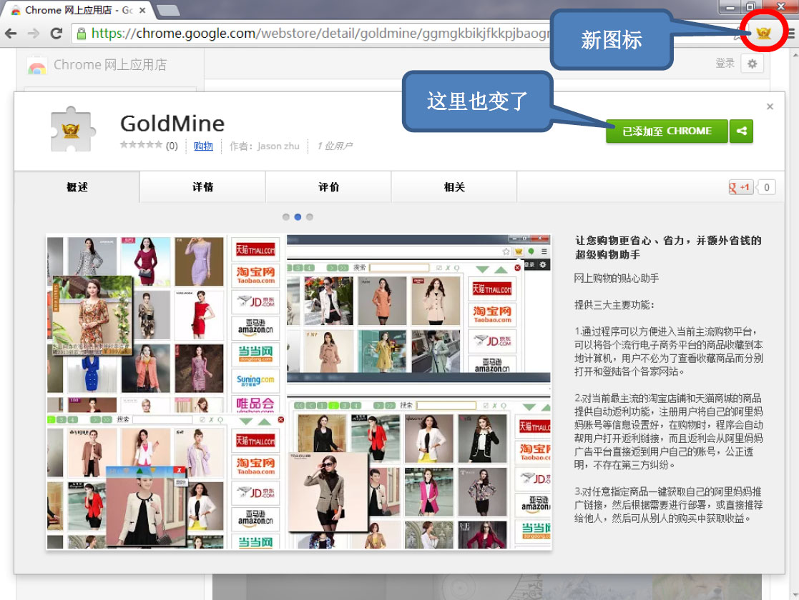图5 GoldMine安装完毕
如果您只是用来收藏商品，无需进行任何设置，已经可以使用。
如果您需要使用一些注册功能，则需输入注册信息，首先单击浏览器右上角对应的图标，弹出菜单如图：
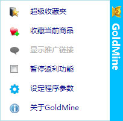图6 GoldMine弹出菜单
选择倒数第二个，“设定程序参数”，打开如下页面：
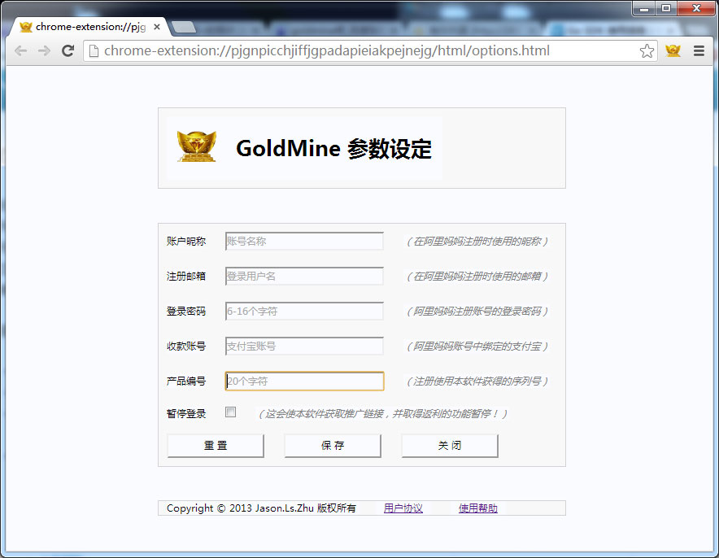图7 参数设定页面
在图7中，输入注册信息及您的登录密码，将“暂停登陆”中的勾号去掉，单击保存按钮即完成所有设置。
安装好GoldMine后，打开浏览器（比如chrome），即可使用GoldMine的收藏功能。
1. 通过程序可以方便进入当前主流购物平台；2. 可以将各个流行电子商务平台的商品收藏到本地计算机。
这给用户至少带来两大好处：
1. 不必在浏览器中收藏一堆电商平台，什么淘宝、天猫、京东，等等，最主流的网站就由一二十个。
2. 用户不必为了查看收藏商品而分别打开和登陆各个各家网站。这点尤为重要，可以为用户节省大量时间。
本软件已经内置最主流的购物平台，因此，您无需在收藏这些网站。
首先单击浏览器右上角，本扩展程序的图标，弹出菜单，如图6所示，选择单击第一项“超级收藏夹”，弹出收藏夹，如图8所示：
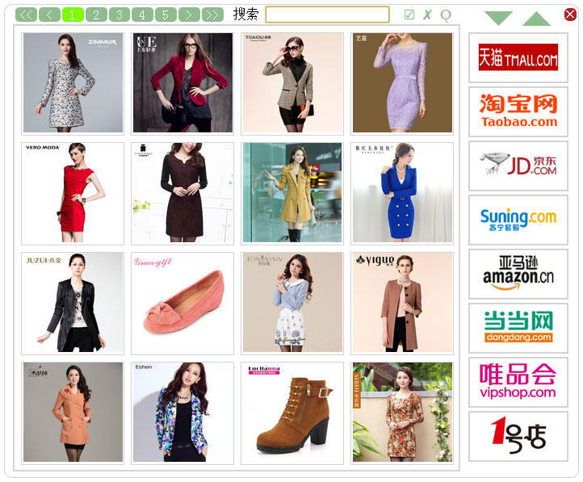图8 超级收藏夹随机商品展示
打开收藏夹后首先看到的界面类似下图（每次显示的内容会有差异）.这是超级收藏夹首页自动显示的一些商品，这通常是从网上商城随机抽取展示的商品，如果使用者对某个商品感兴趣，可以进去看看。进入方式，只需用鼠标单击对应图片。
在收藏夹的右侧，用户可以看到一些最主流的电商平台logo，如淘宝，天猫，京东，等等。将鼠标移到相应的图片logo图片上，就能看到，用户已收藏的属于该电商平台的商品。如果是新安装的程序，收藏夹中并未收藏任何商品，就如图9中左侧全是空白。
但是在右侧，列出了部分最主流网商，通过上下滚动，大约有二十几个网商。单击任意一个图标，即可进入他们的电商网站。
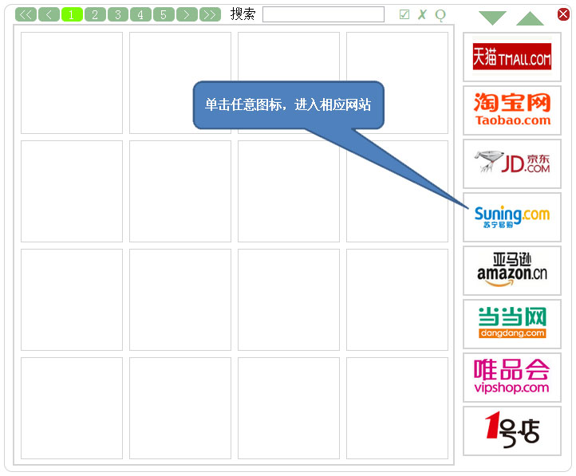图9 超级收藏夹
例如我们当前在浏览某个商品，如图10所示：
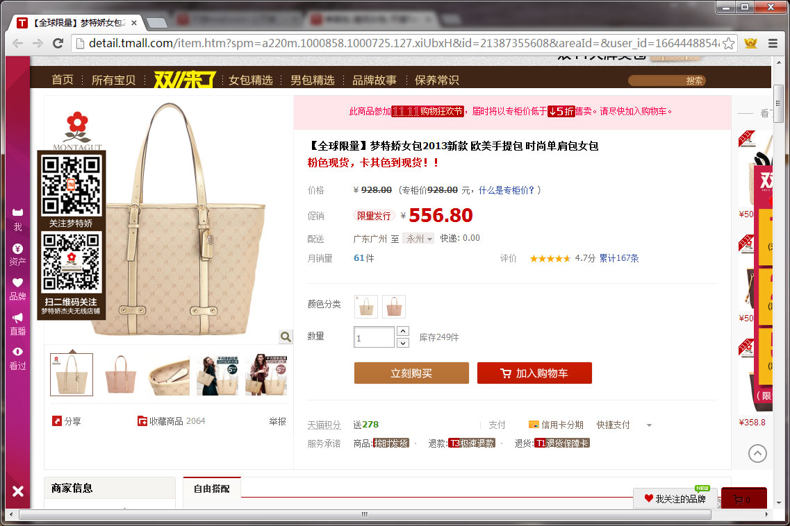图10 商品示例页面
如果您对该商品很感兴趣，则可单击右上角本扩展程序图标，并在弹出菜单（如图6）中选择单击第二项“收藏当前商品”，就可将当前商品收藏到本扩展程序的超级收藏夹中。
或者按快捷键（Ctrl-Shift-S）来收藏当前页面的商品。
如果商品已经收藏了，再次收藏会更新商品的信息并置顶，但不会重复收藏。
单击扩展程序图标，如图6所示，并单击“超级收藏夹”，即可打开收藏夹，然后将鼠标移动到相应商家图标上，相关收藏的商品就会列出来，如图：
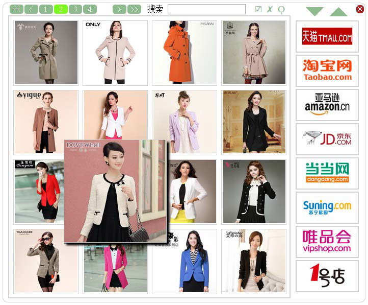图11 超级收藏夹
如果将鼠标移动到商品图片上时，图片会放大显示，并且，如果鼠标移到图片底部时，会显示商品的名称和价格。
如果想再次浏览该商品的详细页面，只要单击该图片，即可进入对应商品页面。
如果收藏的商品较多，每页收藏显示16个商品，在收藏夹的顶部有页面导航。新加入收藏夹的商品，在浏览收藏时最先显示。
如果收藏的商品较多，想快速查找，可以在顶部的搜索框中输入关键词来搜索。比如，想找之前收藏的关于零食方面的商品，可以输入“零食”，则收藏夹立刻过滤出与零食相关的商品列表：
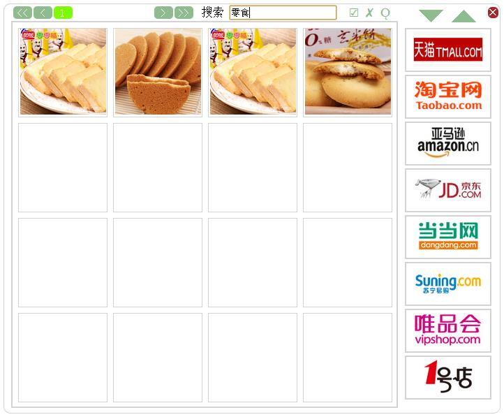图12 关键词过滤收藏
此时将鼠标扫过其它网商图标，可以分别显示已收藏的各家网商中有关零食的商品。
又比如，我们想查看女士鞋类商品，可输入“女”和“鞋”用空格或逗号分开。
又如，我们想查看女士用品，但不想看鞋或靴子类商品，可输入“女”、“-鞋”和“-靴”用空格或标点分开。
搜索的规则是：如果出现在搜索框中的字词，如果前面不紧挨着“-”，则表示商品信息（包括名称、类别、地址、价格等等）中必须含有该字词；如果前面紧挨“-”，则表示商品信息中不能包含该字词。
默认情况下，我们单击收藏夹中的任意一个商品图片或网商图标时，浏览器会关闭收藏夹并打开相应链接。有时我们想打开多个而不自动关闭收藏夹，或者受想先打开商品页面，并继续浏览收藏夹中的商品。
首先在收藏夹顶部靠右位置找到气球状图标“Ǫ”，单击该图标，变成橙色背景，则已经锁定了当前收藏夹，您可以单击收藏夹的任何链接，都不会自动关闭收藏夹。
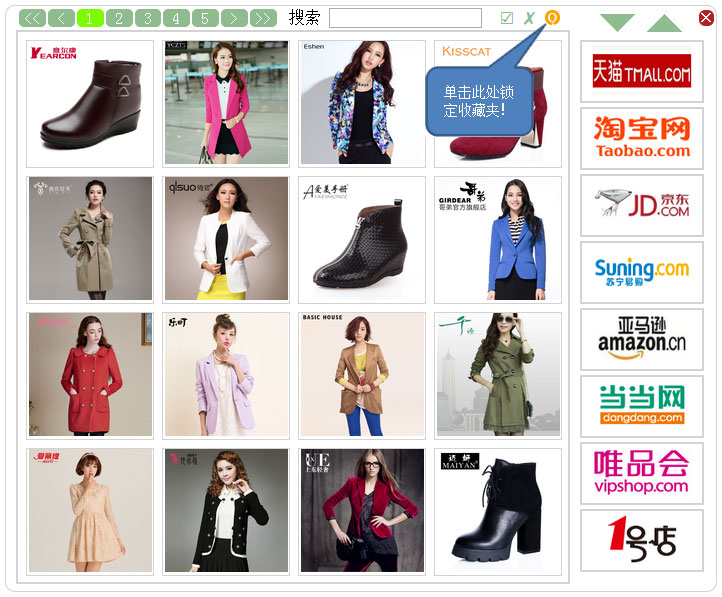图13 锁定收藏夹按钮
如要关闭锁定的收藏夹，只需单击收藏夹右上角的x图标即可；或者单击浏览器中除收藏夹以外的位置。
可以对收藏夹的商品进行维护，比如商品显示排名提前，显示排名退后，排名置顶，删除单个商品或批量删除商品。
对单个商品的操作
将鼠标移动到商品图片的顶部，会浮现出操作按钮，如下图：
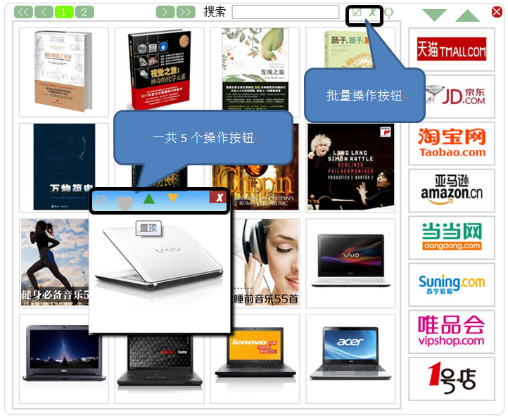图14 操作收藏商品的按钮
特定商品的五个操作按钮一次为“选中”、“置顶”、“上移”、“下移”和“删除”。
☑选中：选中或取消选中商品，用于批量删除；
♥置顶：将商品显示排名放到当前的第一位置，但在今后如果有新的商品被收藏时，排名仍会向后移动；如果之前已经处于置顶状态，再次单击，取消置顶，但对商品的显示排名不会产生影响；
▲上移：将商品排名次序向上移动一行；如果已经是第一行，在置于第一的位置；
▼下移：将商品排名次序向下移动一行；如果已经是最后一行，在置于倒数第一的位置；
✗删除：从收藏夹中删除当前商品，在删除前，还会再一次让用户确认，才正式删除。
收藏夹顶部中间位置有两按钮进行“批量选中”和“批量删除”
☑ 批量选中：选中当前收藏页面的所有商品，注意，如果此时用户又将鼠标移到另一家电商的图标上时，当前选中的商品将被清除；
✗ 批量删除：删除当前选中的所有商品，在删除前，还会再一次让用户确认，才正式删除。
购物返利功能实际上并不需要特殊操作，只要在“设定程序参数”中正确设置了注册信息，然后按照正常的购物流程即可。在用户单击商品页面的“立刻购买”或“加入购物车”的时候，GoldMine程序会同时启动，如果当前页面已经是合适的链接页面，程序将什么也不做，用户进入正常购物状态；如果当前页面不能返利，GoldMine会为用户获取相应的商品链接，如下图所示：
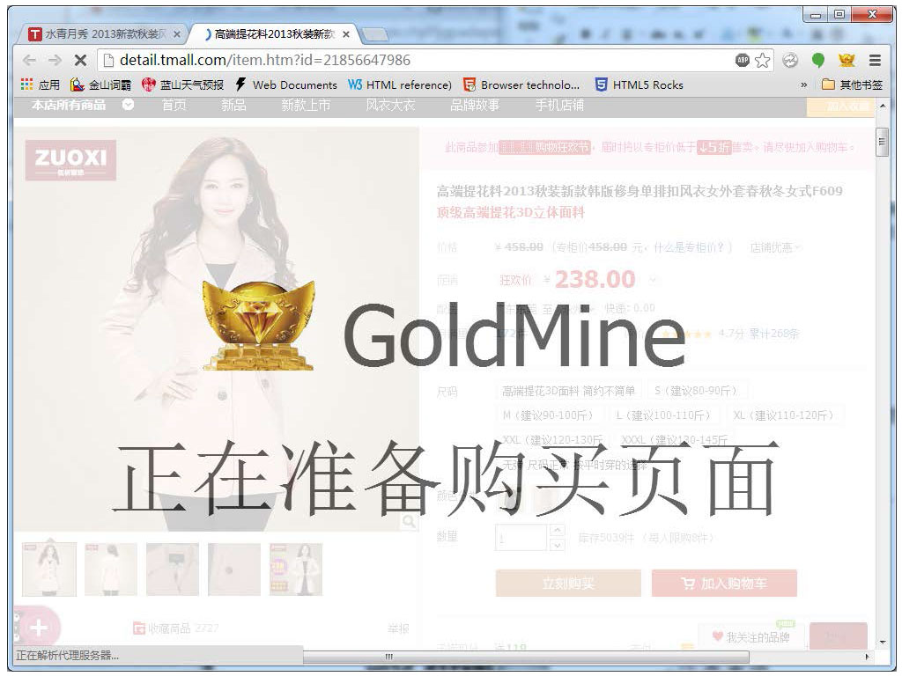图15 准备购买页面
浏览器会关闭当前页面，并使用新的链接重新打开同一商品的页面，这个时候，用户再次单击商品页面的“立刻购买”或“加入购物车”时，GoldMine将不再激活，此时就和平常购物过程一模一样。
关于准备购买页面的时间，根据个人的网速不同，大约1-2秒钟不等，如果后台已经缓存了相应的链接，则不会出现该页面，而是直接打开对应链接。
有少量商品，店家并没有在广告平台进行推广，这时商品页面将不会被关闭和重新打开，GoldMine会在屏幕的右下方弹出没有推广链接的信息，此后用户再次单击购买商品，也将和平常购物过程一样。但这时购物是没有返利的。
首先打开商品页面，可以是从收藏夹中打开，也可以是任意链接进入的商品页面，此时还不能直接单击GoldMine图标并单击获取推广链接，此获取推广链接的图标还是灰色，表示本程序还不知道推广链接，如图16所示
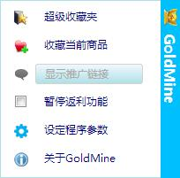图16 推广链接未准备好
用户需先单击“立刻购买”或“加入购物车”让GoldMine获取到推广链接。然后在单击GoldMine图标，此时显示菜单如下所示：
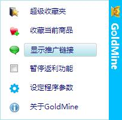图17 推广链接已经准备好
此时“显示推广链接”的图标变成了绿色，单击该菜单项，显示推广链接如下：
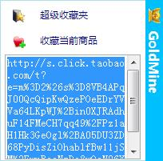图18 显示商品推广链接
此时用户可以复制该链接，并将该链接发送给朋友或他人，从他人的购买中获取返利。
注意，不要把浏览器地址栏中的地址当作推广链接地址，不能直接从浏览器地址栏中拷贝地址，直接使用该地址是无法获取返利的。
1. 如果用户收藏一些商品后，卸载了本程序，再次安装后，所有的收藏都会清零。如果没有卸载，而是通过程序的自动升级或手动升级，升级到新版本，则所有收藏都会继续保留，而且与之前设置情况完全一样。请用户根据需要，谨慎处理。
2. 推广链接地址和浏览器地址栏中看到的地址是不一样的，浏览器地址栏中的地址是推广链接经过重定向后的地址，直接浏览该地址虽然也可以进入商品页面，但无法获得返利，因此，在给朋友或他人发送返利链接时要特别注意。当然，如果安装了GoldMine，该程序是能够自动获取并打开返利链接的。
3. 一定要进入商品页面后，单击“立刻购买”或“加入购物车”的方式购买。有些商品的展示链接图片上带有购买按钮，或所谓一键下单，注意不能图省事而直接就单击这里的购买按钮，而是一定要先进入商品详细介绍页面。
4. 如果用户安装了一些广告过滤程序Adblock Plus，默认情况下会影响GoldMine的购物返利功能，请取消Adblock Plus对淘宝和天猫网站的广告过滤即可。可以在浏览到对应网页时，单击浏览器多功能栏（原来叫地址栏）中的ABP图标，并在弹出框中，选择取消过滤。参考下图：
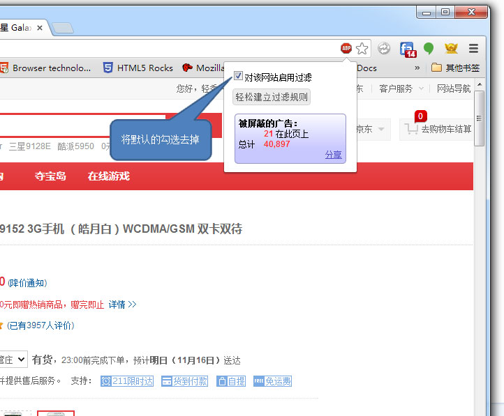图19 快速取消Adblock plus对当前浏览网站的过滤
或者进入Adblock Plus的设置页面进行设置，参考下图：
在Adblock Plus的设置选项中，在排除域名下，添加“taobao.com”和“tmall.com”。
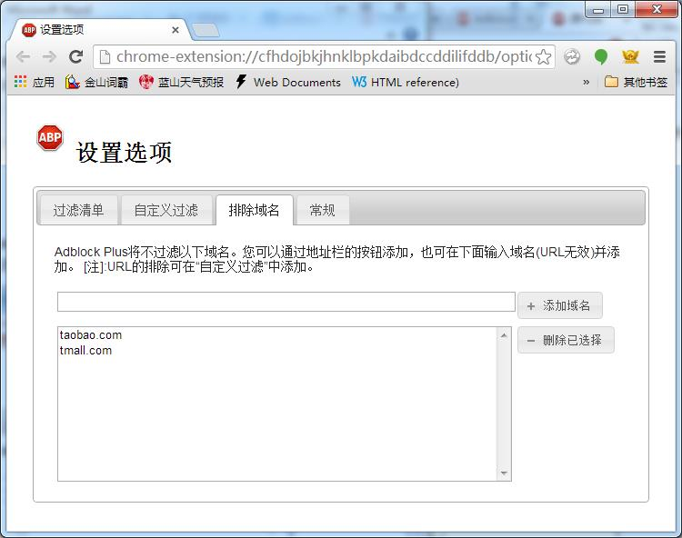图20 Adblock plus设置排除域名
如用户安装了其他过滤程序，请做类似的设置。